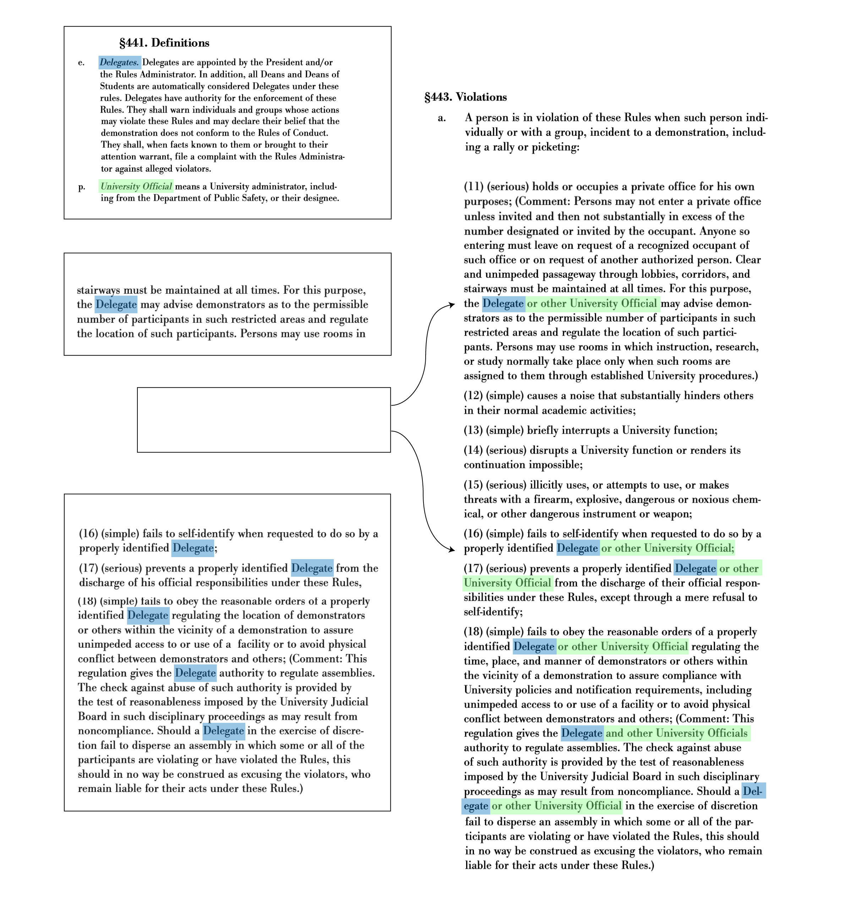
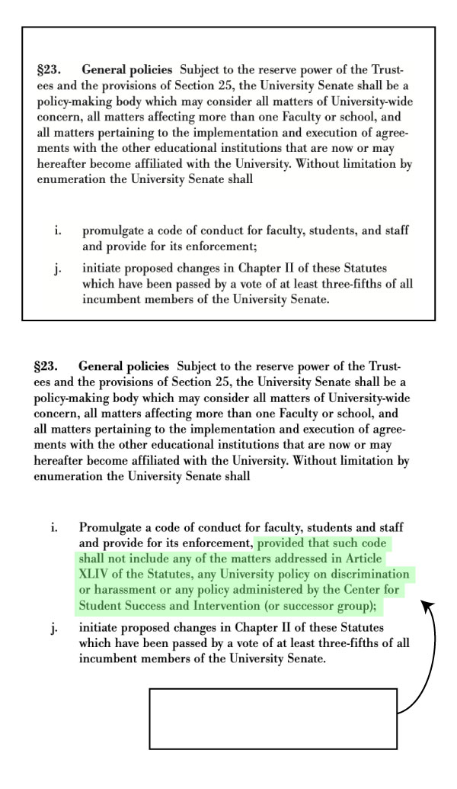

As the Columbia community left campus for summer break in May, those temporarily suspended following the Butler protest prepared for their hearings, which were to be held online by the UJB and overseen by the provost, as per the May resolution.
But over the course of the summer, students lost their right to request an open hearing, be granted a specific time frame for their disciplinary process, and protest inside academic buildings. The University Senate, the University’s critical policymaking body, lost all jurisdiction over the Rules and the Rules Administrator gained the ability to launch investigations into students, even if no complaints have been filed against them.
The trustees also added a clarification stating that though the Rules apply to all individuals, there is an exemption for individuals participating in demonstrations protected by the National Labor Relations Act.
Shipman made her first public comments about the changes at an Oct. 3 University Senate plenary, during which the Senate’s student affairs committee expressed concerns about the unilateral nature by which the changes were made.
“There is plenty of fault to go around, certainly some of it rests with me and many others,” Shipman said. “But we were in a situation that was creating so much liability for us as an institution that yes, we did have to act. And that was, I’m sure is still, shocking and frustrating. But there was no way around it, frankly, in the board’s view.”
Since the Rules’ adoption in 1982, the trustees have amended the statutes in such a sweeping manner only twice. The last time, in 2015, the process involved a series of senate-led community debates, resulting in the trustees both broadening the scope of possible sanctions beyond suspensions and expulsions and clarifying ambiguous elements of the disciplinary process—both of which were issues raised by students at open town halls.
In contrast, the trustees enacted the new changes this year behind closed doors.
Since former interim University President Katrina Armstrong notified the community on March 21 of the UJB’s move from the University Senate to the provost’s office, no University administrators have sent any communication to the Columbia community about changes made to the statutes. The University does not maintain an online archive of previous versions of the statutes.
The only public communication surrounding changes to the statutes has been a web page maintained by Rules Administrator Gregory Wawro, titled “Updates from the Rules Administrator.” But the first posting about the changes was not made until Sept. 5.
The changes to the statutes and the Rules come in the wake of Columbia’s July 23 agreement with the Trump administration, in which the University agreed to a $221 million deal with the federal government to restore federal grants terminated in March and settle its civil rights investigations. In the deal, the University codified the March 21 commitments, mirroring certain changes to the statutes—including banning masks on campus, with exceptions for medical and religious reasons.
Broadly, the changes also follow continued pressure from the federal government to enact more severe discipline on student protesters at Columbia and universities across the country.
According to senate executive committee chair Jeanine D’Armiento, the University Senate Rules committee—which specializes in the Rules process—had been working on a plan to change the statutes for over a year and planned to engage the community through town halls and debate.
“What happened with the Rules committee was they were going through the arduous process of changing the Rules, which required town halls, required meetings—you know, these things, in our University setting, are not done quickly,” D’Armiento said at the plenary. “And what happened over the summer—there was an override.”
D’Armiento said that much of what the senate had outlined in the guidelines to the Rules of University Conduct—a senate document published in August 2024 aimed at providing the community with a mechanism to understand the Rules—was intended to go directly into the statutes, and has “very similar language” to some of the enacted changes. The web page for the guidelines reads that the trustees “nullified” them in July, though a University official told Spectator that the University may consider incorporating other elements of the guidelines in future changes to the Rules.
At the plenary, Shipman noted that the changes are not an effort by the administration to create a “more draconian, provocative set of rules that makes it impossible to protest.”
“At every turn, the effort is to make any changes minimal,” Shipman said. “But I think all of you know, too, that trying to run an institution of this size, and managing the level of risk and opportunity for multiple groups to be able to protest and have freedom of expression—it does require some amount of planning and a host of other things.”
Spectator reviewed versions of the statutes from September and May 2024—which was active until July of this year—and annotated the key differences between them.
Silent changes
Since the trustees created the Rules in 1968, there have only been two large-scale revisions of the statutes—one in 1988 and the other in 2015.
The first came in after the summer of 1985, during which the University launched disciplinary proceedings against students who had participated in a three-week occupation of Hamilton Hall in favor of divestment from companies with ties to South African apartheid. The hearing officer on the proceedings sanctioned students with a one-semester disciplinary warning, which the University administration saw as too lenient.
The administration suggested that the University Senate review the Rules in order to make the language less ambiguous, and as a result, the trustees amended the statutes in 1988 to make it so that formal hearings—as opposed to Dean’s Discipline, a process by which the dean and student informally settled the violation—would be reserved only for students charged with serious violations. To enforce the severity of the formal hearing process, the University limited the array of sanctions that the hearing officer could employ to solely suspension or expulsion.
The trustees did not amend the statutes again until 2015, when the Rules were once again put under review. The narrowed sanctions, students said, were creating a chilling effect on protest. The only alternative to severe sanctions—Dean’s Discipline—was void of due process, given that it did not offer students the right to call witnesses or offer students enough time to call for evidence. Dean’s Discipline also often forced students, they said, to be judged by the exact people they were protesting against.
As a result of the review, the trustees removed Dean’s Discipline from the statutes and broadened the scope of sanctions to the current offerings—which include warnings and community service requirements. Since then, the statutes have not changed.
The last announcement the University made to the community about any potential changes to the current statutes was on March 21, when the trustees approved changes to the UJB—including the decision that the UJB can no longer host student panelists and to move the UJB from the senate to the Office of the Provost.
On May 7, the trustees adopted a set of resolutions ratifying the changes and—according to the “Updates from the Rules Administrator” web page—“instructing that the Rules of Conduct in the University Statutes be updated accordingly.”
But the changes to the July 23 and Aug. 13 statute amendments go beyond the changes outlined in the March administrative communications, and the University has yet to send any official communications to the community about any of the changes made over the summer, barring Wawro’s updates web page, which did not communicate any changes until Sept. 5.
“These changes were made over the summer, while our students and faculty were largely absent from campus and thus unavailable for broad consultation and collaboration,” a statement presented by the student affairs committee at the Oct. 3 plenary read.
The presentation came as a follow-up to an Oct. 3 email from the committee, titled “Recent changes to University Statutes and Rules of Conduct.” At the plenary, Joseph Slaughter, professor of English and comparative literature, expressed his concern that the presentation had to come from the student affairs committee as opposed to the provost’s office, calling it a “real dereliction of duty on the part of the administration.”
“We feel it is inappropriate for Columbia to pull back from the standards of deliberation and consensus building that normally govern campus decision-making, especially at a time when civil liberties and democratic institutions are under threat,” the committee added in its joint statement.
On Sept. 5, Wawro made a post on his web page titled “FAQs on Updates to the Rules of University Conduct.” In the post, he included six bullet points on what the changes constituted, including clarifying the rule against protests in academic buildings and noting that the Rules explicitly state that all demonstration activity is subject to the University’s antidiscrimination and anti-harassment policies.
Beyond that, Wawro did not specify particular changes, writing that the amendments “removed outdated references and unused or extraneous parts of the process.” He wrote that there were changes to who can issue notice and warnings regarding potential violations of the Rules, but provided no specific information about the identity of these enforcers.
“I do know that Greg has worked so hard to post all of these updates on the Rules site and has been meticulously focused on students knowing what’s happening,” Shipman said at the plenary. “But I take the point that we can do better, and obviously people are going to want to understand the before and after in an easier fashion, so I understand that as well.”
The University does not have any previous versions of the statutes posted online in a repository.
“When they are modified, there should be a consultative process, there should be some explanation about why they’re being modified, and it should be done in a transparent way, where you can see all of the different versions,” Michael Thaddeus, University senator and acting president of Columbia’s chapter of the American Association of University Professors, said in an interview with Spectator.
Changes to disciplinary proceedings
§449. Rights of the Respondent
The primary changes made to the rights of respondents undergoing disciplinary processes make the process more ambiguous, limiting certain rights held by the respondent.
In May, respondents—individuals facing disciplinary charges—had the right to be notified of a misconduct report against them. Under the September statutes, they now only reserve the right to be notified of the commencement of an investigation—not that a report has been made against them.
A University official told Spectator that the Office of Rules Administration deals with a number of complaints that are not charged as a Rules violation. The official added that the University made the change because notifying somebody in such circumstances may cause unnecessary concern.
A protester undergoing disciplinary action also previously had the right to request access to University documents or camera footage for use in their defense. Now, though students still reserve this right, they can only employ these rights when the request is “narrowly tailored” and “not overly burdensome.” Additionally, the Rules Administrator has full discretion to review, approve, and deny these requests, in whole or in part, and will deny all repeated requests.
The changes also focus on the timeline of the disciplinary process itself, giving the University greater flexibility over the period within which it must conduct a hearing—a change the University partially attributes to the high influx of protest-related disciplinary cases opened in recent years.
Previously, the University sought to resolve every report of misconduct within approximately two months of the incident’s occurrence. The statutes outlined an even more specific target time frame—the investigation had to begin within five days of the incident, conclude within 15 days of its start, and a hearing had to be held within 15 days of the completion of the investigation. The hearing panel would give a decision within five days of the hearing and following that, the panel would have five more days to notify the respondent of sanctions.
The University had not always followed this timeline, however. Wawro announced the completion of the UJB’s hearings for the April 18, 2024, “Gaza Solidarity Encampment” and the April 30, 2024, occupation of Hamilton Hall nearly nine months later, on March 11, 2025.
A University official added that the two-month time frame caused confusion when the target was not met, including in high-volume incidents. The official added that efforts were made to expedite disciplinary processes for the large number of cases from the encampment, Hamilton occupation, and Alumni Weekend encampment.
As such, the amended statutes eliminate the timeline altogether, instead clarifying that the University will resolve misconduct reports “as promptly as possible.” The hearing will happen after the investigation concludes, and the respondent will receive notice of any sanctions within a “reasonable” time frame following the hearing process.
§447. Prehearing Procedures/Investigation
The changes to the disciplinary procedures also affect investigations, which make up the procedures prehearing.
Before the changes, the University initiated investigations when community members filed written complaints. The complaints typically stated the specific nature of the offense. But per the new statutes, “a complaint is not required for the Rules Administrator to commence an investigation under the Rules.”
A University official told Spectator that the University made this change because, in situations in which there is clear evidence of Rules violations, pursuing an investigation without the initiation of formal complaints can help to expedite resolution and preserve time-sensitive evidence.
Typically, complaints go through the Office of Institutional Equity, which initiates an investigation—a multistep process including party and witness interviews, as well as a summary of evidence. OIE investigators determine whether it is “more likely than not” that the unallowed conduct occurred from this process.
Additionally, respondents can no longer request an open hearing. Previously, it was standard that open hearing requests were generally granted unless the UJB decided to keep them closed “for cause,” considering risk to public safety or the “deterrent or permissive effect on the campus community.” The September version omits the open hearings section.
A University official told Spectator that the University made the change to reflect concerns about doxxing, social media, and the Family and Educational Rights and Privacy Act—a federal law that protects the privacy of student educational records. The official added that open hearings would risk the integrity of the disciplinary process and the privacy of participants.
The official also noted that the change brings the University’s policy closer to aligning with the practices of peer institutions.
Under the new statutes, respondents are also no longer guaranteed the opportunity to present witnesses or other information consistent with the Rules, as was previously the case in OIE investigations.
“It’s a way of being more secretive, more opaque, and instead of even having a right to ask for something, you don’t even have a right to ask anymore,” Thaddeus said.
The University added a stipulation to the Rules about whether immigration status would be considered during hearings, concluding that the University will not provide the UJB with information about the respondent’s immigration status and that the UJB will not consider the respondent’s immigration status in its deliberations if a student were to self-identify as an immigrant.
In the July agreement with the Trump administration, Columbia agreed to provide the federal government with “all disciplinary actions involving student visa-holders resulting in expulsions or suspensions.”
§449. Sanctions and Other Remedies
The September version of the statutes removes a paragraph clarifying that, unless the respondent is actually sanctioned for violating the rules, “no notation, letter, or other record” will go on their file, or on the file of any other community member in connection with the activities. Under the changed statutes, even if a respondent does not get sanctioned for an action, the University reserves the right to put a disciplinary note in their file.
A University official told Spectator that the change is not intended to put notes on any student’s permanent file if they are not found responsible for Rules violations, but instead to allow the University to share information with relevant University stakeholders while respondents are actively going through the Rules process and under interim suspension.
Broadly, the University is required to maintain records of all conduct proceedings, regardless of whether the student is found responsible, but the information is not to be attached to a student’s transcript or human resources file if they are not found responsible, the official told Spectator.
Changes to the Rules on demonstrations
The trustees also made extensive changes to the rules regarding demonstrations themselves, focused on who students must obey at protests and where protests can be held.
§442. Jurisdiction
The current version adds that protests in academic buildings are not acceptable
The current version adds that protests in academic buildings are not acceptable
The current version adds that protests in
academic buildings are not acceptable
Until September, no areas of campus were entirely off-limits for protests, according to the previous version of the statutes. The statutes clarified that any demonstrations taking place on or at a University facility were subject to the Rules, which included restrictions on entering private offices without authorization, disrupting University functions, or causing noise that would inhibit academic activities on campus. No protests were disallowed by virtue of occurring in a certain on-campus space.
The September changes disrupt this precedent, declaring that demonstrations inside all academic buildings and “places necessary for the conduct of University activities” are unacceptable under the Rules because of their “likelihood” to disrupt academic activities. It is not specified which places are considered “necessary for the conduct of University activities.”
The University had a ban on indoor demonstrations in 1968. When six students were disciplined for defying that ban, hundreds of students gathered to support the so-called “IDA Six” at a rally on April 23, 1968, sparking a chain of events resulting in students occupying five campus buildings.
“For decades, demonstrations have been allowed indoors, and demonstrations have taken place indoors, and there are times when it’s totally appropriate to have demonstrations indoors,” Thaddeus said. “That can be the only way to accomplish the intended purpose of the demonstration in some situations.”
The other addition to the new jurisdiction section is a paragraph stating that, though the Rules apply to all individuals, there is an exemption for individuals participating in a demonstration that constitutes a “bona fide protected concerted activity within the meaning of the National Labor Relations Act.” This development broadens protections for members of unions by expanding the exemption to both include part-time employees and extend beyond solely instances of formal labor disputes with Columbia.
§441. Definitions and §443. Violations

“Delegate” has been changed to “Delegate or other University Official”
“Delegate” has been changed to “Delegate or other University Official”

“Delegate” has been changed to “Delegate or other University Official”
The changes to the possible Rules violations are focused on the authorities students should “obey.”
In each instance in which “delegate” was originally written, the language has been updated to read “delegate or other University Official.”
The September version of the statutes is the first to include the term “University official.” The Rules newly define the term as “a University administrator, including from the Department of Public Safety, or their designee.” The statutes include no additional information on who a “designee” may be.
A “delegate,” on the other hand, is specifically appointed by the University president or Rules Administrator, and is granted special authority for Rules enforcement. All deans are automatically considered delegates.
A University official told Spectator that delegates receive training related to the Rules, including tactics for deescalating demonstrations. The official clarified that the Office of Rules Administration has also implemented similar Rules training with Public Safety officers. Delegates and Public Safety officers generally work in tandem at demonstrations.
Per the statute changes, University officials are now granted essentially all of the enforcement powers that delegates hold. These include the right to regulate the time, place, and manner of demonstrations, ask students to self-identify, distribute warning flyers, and order demonstrations to disperse following efforts to secure compliance, among other powers.
A University official noted that while delegates are still expected to play a primary role in managing protests, the changes serve to support delegates in situations in which they cannot be present.
While both serve as equal enforcers of the rules, the key difference between delegates and University officials is in the responsibilities that delegates hold at protests.
Most notably, per the September statutes, University officials do not have a stated “responsibility to protect the rights of lawful demonstrators” whereas this responsibility is explicitly outlined for delegates. University officials also do not have to keep the Rules Administrator “informed of all actions and charges undertaken.”
The primary responsibility extended to University officials is the responsibility to “properly identify” before taking action at demonstrations, a responsibility similarly held by delegates.
§444. Enforcement
New requirements regarding how students self-identify at protests
New requirements regarding how students self-identify at protests
New requirements regarding how students self-identify at protests
According to the amended rules, anyone at a protest must now present a valid ID when asked, and “no one is permitted to wear a mask for the purpose of concealing one’s identity while violating a University policy or rule or state, municipal, or local law.”
The rule stipulates that anyone wearing a mask due to medical or religious reasons is permitted to do so, but may be asked to briefly remove their masks. It notes that this can be done in a private setting if requested by the demonstrator. Previously, only delegates could ask students to self-identify.
A University official told Spectator that the addition upholds University requirements that individuals identify themselves upon request.
At the May Butler demonstration, Public Safety officers required all students to present a valid Columbia ID before allowing them to leave the building. Several students who were studying in Butler and student journalists covering the protests who presented their CUIDs received interim suspensions for alleged participation in the protest. The University overturned the mistaken suspensions within 24 hours.
Changes to the powers of the University Senate
§452. Committee on Rules of University Conduct and §452. Office of the Provost
No mention of the Senate Rules of University Conduct committee
No mention of the Senate Rules of University Conduct committee
No mention of the Senate Rules of University Conduct committee
In May, any changes to the rules would begin in the senate—which would vote on and pass its approval—and then make their way to the trustees, who would sign off on the changes. As the statutes outlined, every four years, the Rules committee would facilitate a public discussion with students and faculty about whether the Rules warranted an update.
The current statutes do not mention this committee once. Section §452—which previously explained that the Rules committee would prepare any material to facilitate the functioning of the disciplinary processes—now is titled “Office of the Provost.” The exact same language that was used to describe the role of the Rules committee is now used to describe the provost’s office—to “prepare any material that will facilitate the functioning of the procedures.”
Where it was once made clear that the senate would vote on changes to the Rules, the statutes now clarify that only the trustees need to approve rules changes.
At the Oct. 3 plenary, University Senator Henry Ginsberg, endocrinologist and professor at the Vagelos College of Physicians and Surgeons, said that he believed the administration “felt that in those 18 months of chaos, of demonstrations, of confrontations were not handled by the senate in any way—that we failed—and therefore the administration and the board of trustees felt they had to take away the senate’s role in overseeing and implementing action against people that obeyed or disobeyed the Rules.”
On April 18, Shipman announced that the senate was under review, writing in an email to the community that while she is deeply committed to shared governance and has benefitted from the senate’s guidance, it was not “built to function efficiently and effectively in intensely challenging moments like this.”
Prior to assuming the acting presidency, Shipman served as co-chair of the board of trustees.
“If the creation, the modification, the interpretation, the discipline, is all in one body, we’re moving more towards an authoritarian structure,” D’Armiento said in a July interview with Spectator.
The senate is not responsible for any adjudication of the Rules—just their creation. Even when it housed the UJB, the senate was only responsible for appointing people to the board.
“You hear things from other people you see, you know, Twitter or op-eds, or whatever else, floating around about the—what we characterize as—false herds and mischaracterizations of the committee and the senate’s role in the disciplinary process,” Will Hunnicutt, chair of the Rules committee in an interview with Spectator. “To a certain extent, trying to assign blame to the committee in the senate of the slow disciplinary process.”
According to the student affairs committee, the Rules committee still exists and is operational. Eli Baum, CC ’26, a senator on the Rules committee, said that the committee has not yet met this year as of Wednesday.
According to the student affairs committee’s Oct 3. email, the guidelines to the Rules—prepared by the senate in July 2024 to “facilitate the implementation and application of the Rules”—are no longer in effect, and the new statutes omit certain elements of the guidelines altogether. These include a provision that “interim sanctions may not impact a respondent’s access to their housing, dining or healthcare services unless their alleged conduct involved serious actual or threatened harm to or in such facilities.”
Broadly, the guidelines were never incorporated into the University statutes.
§23. General Policies
New limit on what the University Senate may oversee
New limit on what the University Senate may oversee

New limit on what the University Senate may oversee
Besides overseeing the Rules, the senate generally has the power to “promulgate a code of conduct for faculty, students and staff and provide for its enforcement,” a power that stayed consistent throughout the changes.
As of September, the senate can still oversee a code of conduct—so long as the code does not include any matters on the Rules, any University policy on discrimination or harassment, or any policy administered by the Center for Student Success and Intervention.
According to the co-chairs of the student affairs committee, the changes to the statutes were not brought to the senate prior to their release. Susan Bernofsky, senator and professor of writing, added at the plenary that the Rules committee has been trying since the summer to get an appointment with senior administrators to discuss the senate’s new role in governing the Rules.
At the plenary, Shipman said that she was “very interested” in working with the Senate and added that she will push for the meeting to happen.
“My thinking is that the principle—the spirit—of shared governance certainly affords the senate at least oversight powers over changes as broad and dramatic as these,” Helen Han Wei Luo, a Ph.D. candidate in the Graduate School of Arts and Sciences and vice chair of the senate, said. “Consolidating decision-making powers to fewer and fewer people is a detriment to our community and is certainly not a way to build confidence.”
Luo noted that, traditionally, the senate has been granted oversight over the statutes.
“There’s one question about whether there was a formal violation of Columbia’s statutes, but there’s also long-standing informal practice,” Luo said.
The student affairs committee noted that it plans to continue to communicate with the student body about the implications of the Rules in an attempt to create greater awareness of their impacts.
“As far as how it is unfolding, I would say that I think we’re in a good position where we caught it super early, and before these impacts are really affecting students and faculty and everyone on campus,” Matthew Beck, a Ph.D. candidate in mechanical engineering and graduate co-chair of the senate, said. “So, we have our eyes on it.”
Copy edited by Maxwell Gaynor, Sreya Gupta, Dalina Cao, and Natalie Wise.
Deputy News Editor Molly Bordoff can be contacted at molly.bordoff@columbiaspectator.com. Follow her on X @mollygbordoff.
Graphics Editor Jenny Ye can be contacted at jenny.ye@columbiaspectator.com. Follow Spectator on X @ColumbiaSpec.
Want to keep up with breaking news? Subscribe to our email newsletter and like Spectator on Facebook.